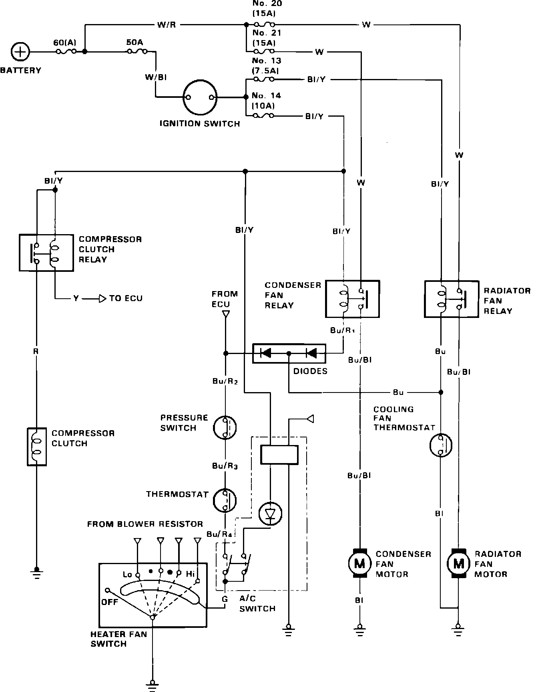

Operation CHARM
: Car repair manuals for everyone.
Home
>>
Acura
>>
1986
>>
Integra L4-1590cc 1.6L DOHC FI
>>
Repair and Diagnosis
>>
Engine, Cooling and Exhaust
>>
Cooling System
>>
Radiator Cooling Fan
>>
Radiator Cooling Fan Motor
>>
Diagrams
>>
Electrical Diagrams
>>
Without A/C
Without A/C
Fig. 3 Electric cooling fan wiring circuit. 1988 Integra:
